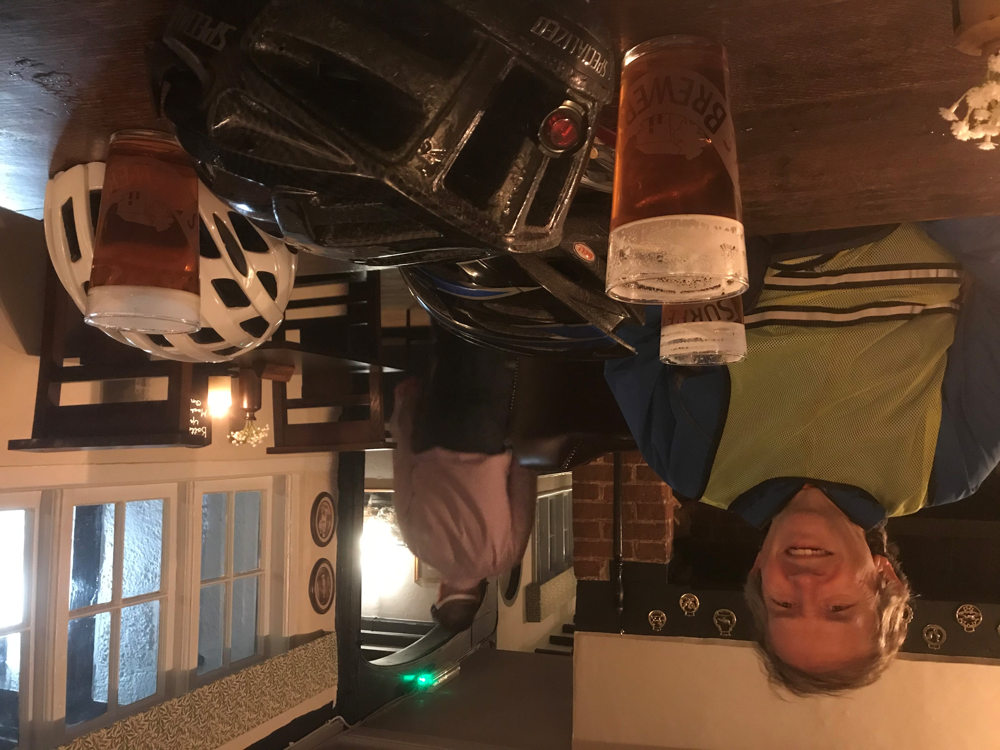

October 2020
4) Aerodrome Loop
The Farmhouse on the way back!
3) Horley to Turners Hill Loop
Pub - the Red Crown in Turners Hill!
2) Capel - Rusper - Newdigate Loop
7 Bells in Newdigate - really nice pub!

1) Horley - Reigate - Redhill - loop
Round Reigate and Redhill and back along Gale Lane.